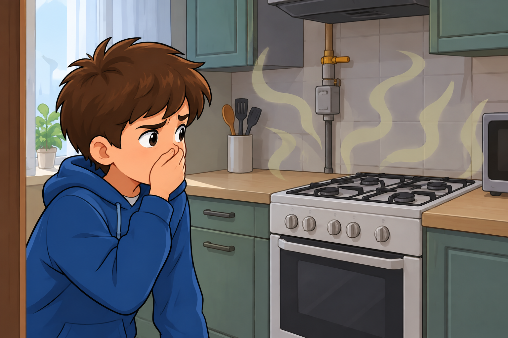

Сюжет второй
Ты заходишь на кухню и чувствуешь резкий, неприятный запах газа. На плите ничего не горит. Что сделаешь в первую очередь?
Срочно открыть окна для проветривания, перекрыть кран газа, если умеешь, и выйти из квартиры.

🎉 Правильно!
Правильно! Главное — устроить сквозняк, не включать электричество и покинуть загазованную зону, после чего вызвать службу газа (104 или 112).